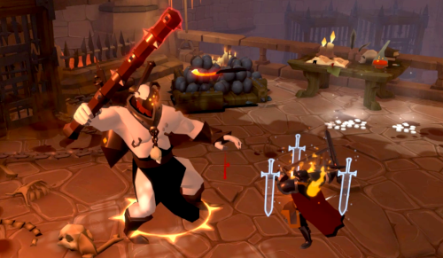
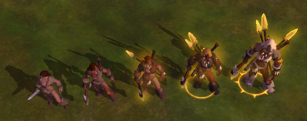

Formas de evoluir no Albion Online
Coletando Recursos
Você pode escolher em qual coleta seguir, quanto maior seu nivel mais você prata ganha.
Aqui estão todas as coletas que você pode escolher para seguir:
Dica 💡
Foque apenas em uma coleta
- Coleta de madeira
- Coleta de minério
- Coleta de pedra
- Coleta de pelego
- Coleta de fibra
- Coleta de pesca
Fazendo masmorras de grupo, ou masmorras solo
Em cada masmorra solo ou em grupo, ao derrotar os chefes, você pode abrir baús de recompensa. Existe baús comuns, raros, epicos e lendário, quanto maior o nivel do baú mais itens raros você pode conseguir.
Derrotando monstros no mundo aberto
Dessa maneira você ganha prata dropada no chão pelos monstros e a chance de dropar itens raros. Além de ganhar muita fama para upar seus equipamentos.